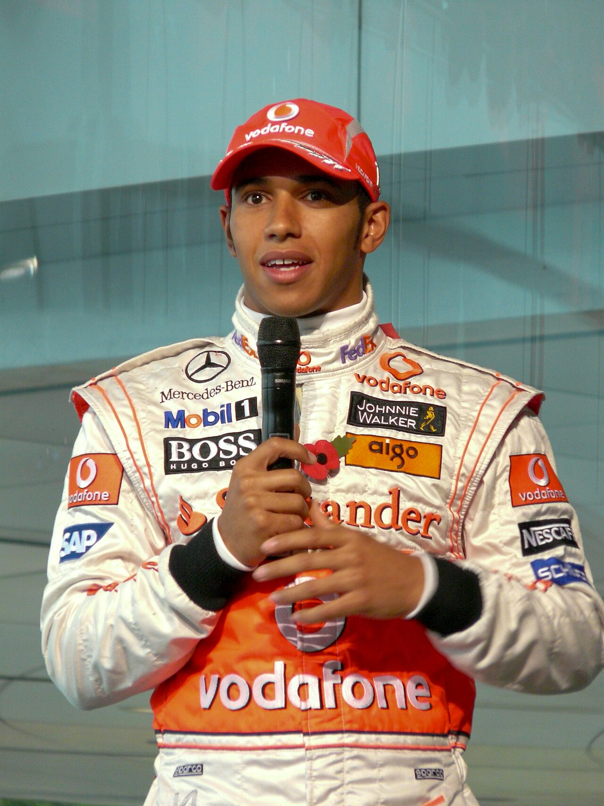

SINTESI DELLA STAGIONE 2008 - IL TRIONFO DI LEWIS HAMILTON
Era V8 Aspirati • 18 Gran Premi disputati

McLaren MP4-23
2008 - Vodafone McLaren MercedesTrascina per ruotare il modello - scroll o pinch per zoomare.
Il Mondiale 2008 è stato una montagna russa emotiva tra Lewis Hamilton (McLaren) e Felipe Massa (Ferrari). La stagione ha visto gare leggendarie come il diluvio di Silverstone (dominato da Hamilton con oltre un minuto di vantaggio) e la prima gara notturna nella storia della F1 a Singapore, segnata dal celebre 'Crashgate' di Nelson Piquet Jr.
🏆 Campione del Mondo Piloti: Lewis Hamilton (Vodafone McLaren Mercedes) - 98 pt
🥈 Secondo classificato: Felipe Massa (97 pt)
🏁 Scuderia Campione Costruttori: Ferrari
🏎️ Numero Gran Premi: 18
LA MIGLIOR GARA DELL'ANNO: GRAN PREMIO DEL BRASILE (INTERLAGOS)
Circuito: Autódromo José Carlos Pace (Interlagos)
Il finale più drammatico e assurdo nella storia dello sport. Felipe Massa vince dominando davanti al suo pubblico di casa e sul traguardo è virtualmente Campione del Mondo, con il box Ferrari che festeggia in lacrime. Ma a 3 giri dalla fine un temporale sconvolge la pista: mentre chi è su gomme intermedie vola, Timo Glock con gomme da asciutto scivola a vista d'occhio. All'ultima curva (Junção), a 400 metri dal traguardo, Lewis Hamilton supera Glock conquistando il 5° posto che gli assegna il titolo mondiale per 1 punto!
IL SORPASSO PIÙ SPETTACOLARE & DUELLO DELL'ANNO
Hamilton su Timo Glock alla Curva Junção a 400 metri dal traguardo
Il sorpasso che ha deciso una stagione intera: con la pioggia battente, Hamilton esce dalla scia della Toyota senza aderenza di Glock e la infila all'interno della curva Junção, strappando il mondiale a Felipe Massa dopo che il brasiliano aveva già tagliato il traguardo da vincitore.